v0.17.21 · approved Luna-style mockups · captures from the Dell XPS build host
Pill states — Night sky
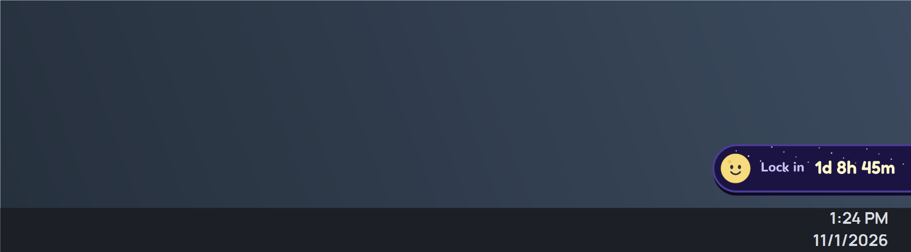
Showing — calm Luna, 1d 8h 45m
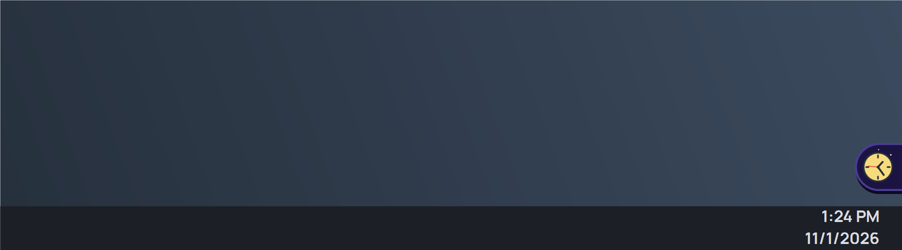
Tucked away — only the clock shows
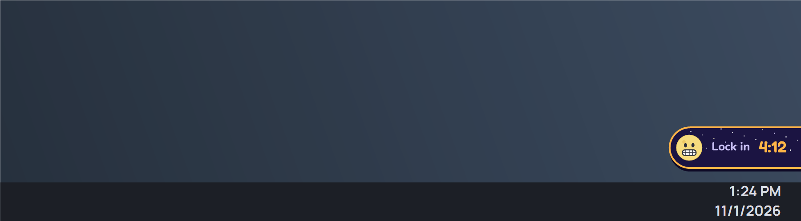
Under 5 minutes — amber, grimace, 4:12
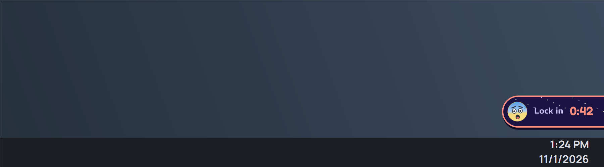
Last minute — red, fearful Luna, 0:42
Pill states — Moon gray
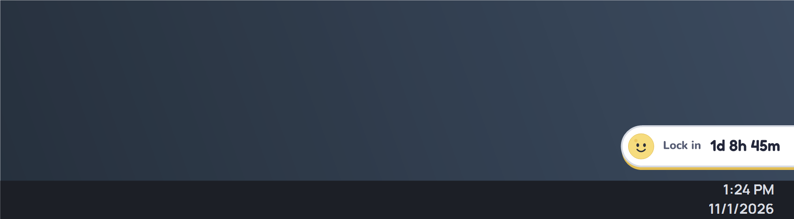
Showing — Moon gray
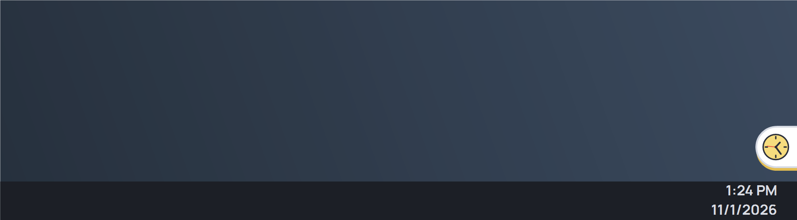
Tucked away — Moon gray
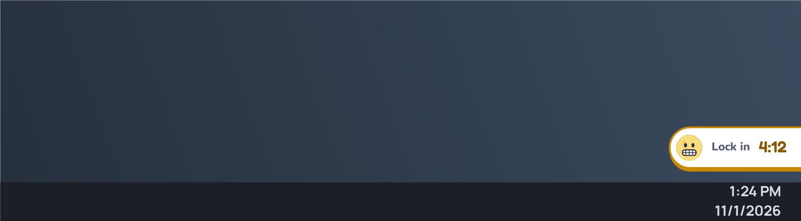
Under 5 minutes — Moon gray
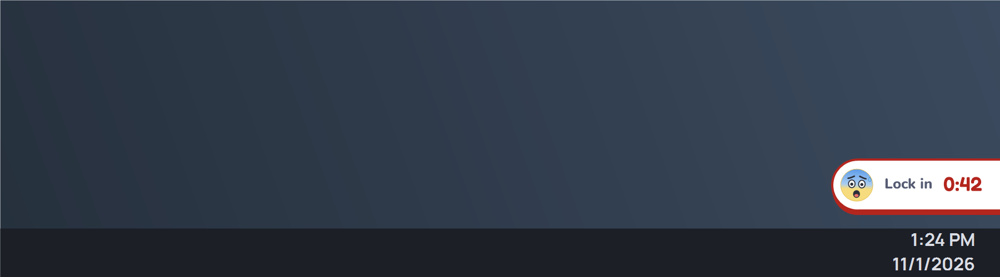
Last minute — Moon gray
On the real desktop (XPS, 100%)
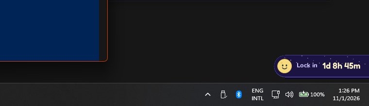
Showing above the taskbar clock
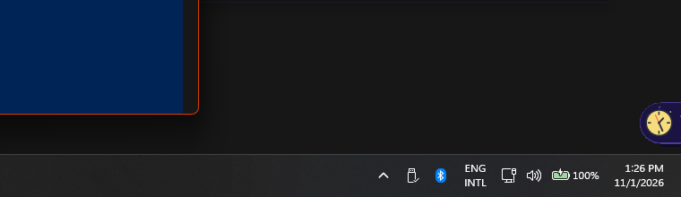
Tucked — clock at the screen edge
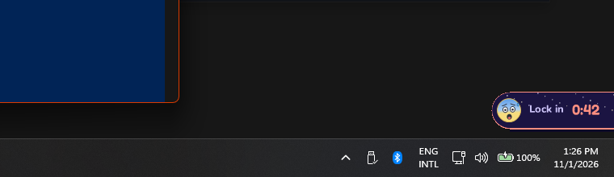
Last minute — red pill and shake
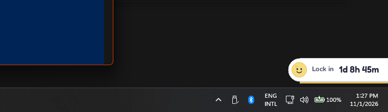
Moon gray on the desktop
Animation
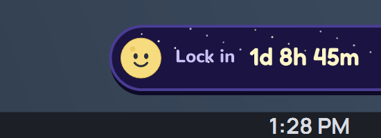
Tuck and hover-untuck with the bounce
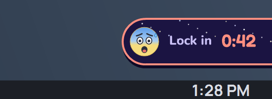
Last-minute shake (~0.5 s loop)
Timer tab — My OpControl
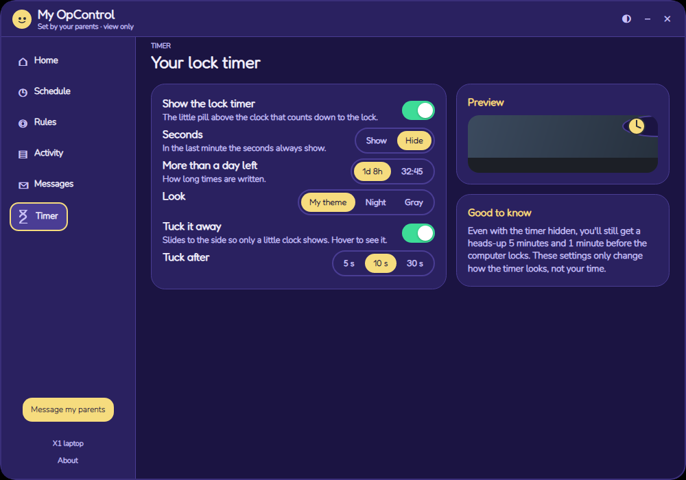
Timer tab — Night sky, English
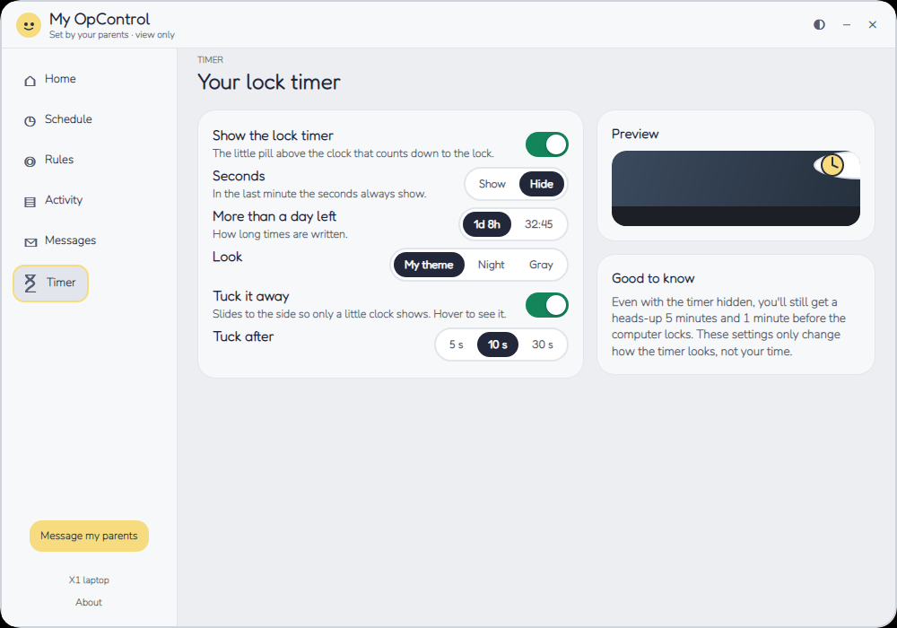
Timer tab — Moon gray, English
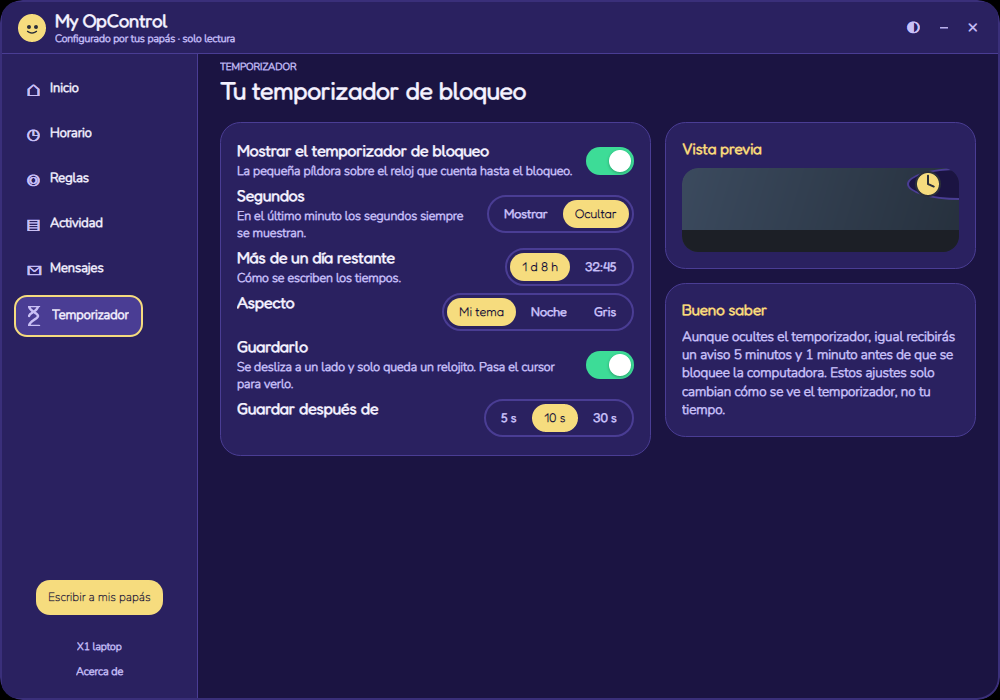
Timer tab — Night sky, es-MX
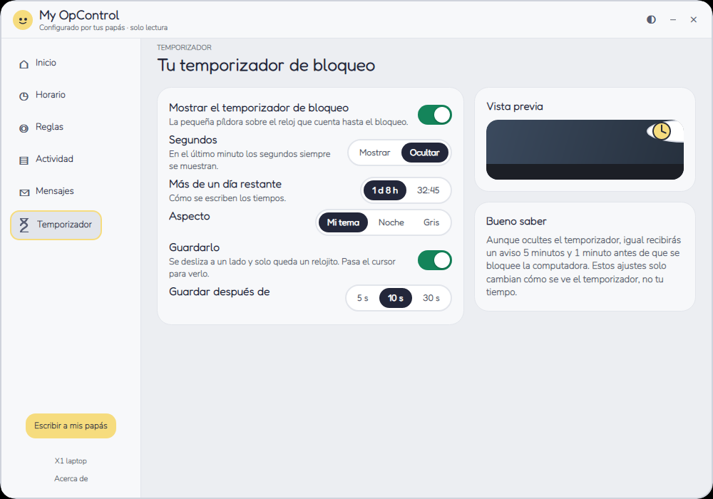
Timer tab — Moon gray, es-MX
The pill images are rendered with the same PillArt paint code in a 900×250
scene; the desktop images are real XPS screen captures of the Debug --timer-preview mode.
The Timer tab captures are the Demo child ("Ana") at 1366×768.